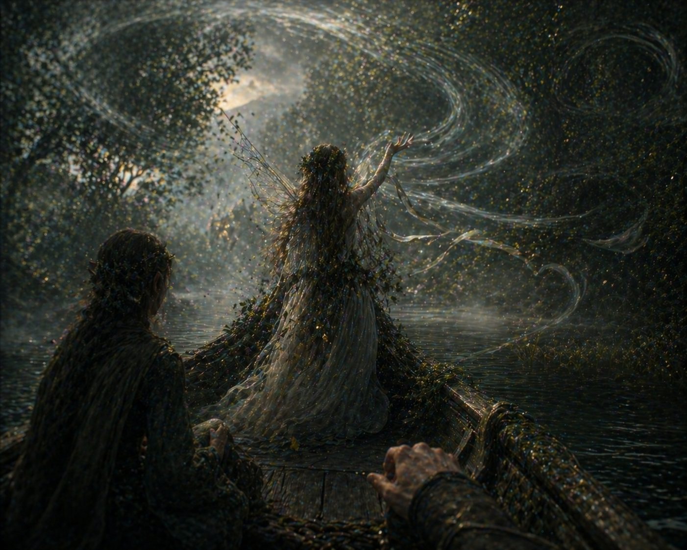
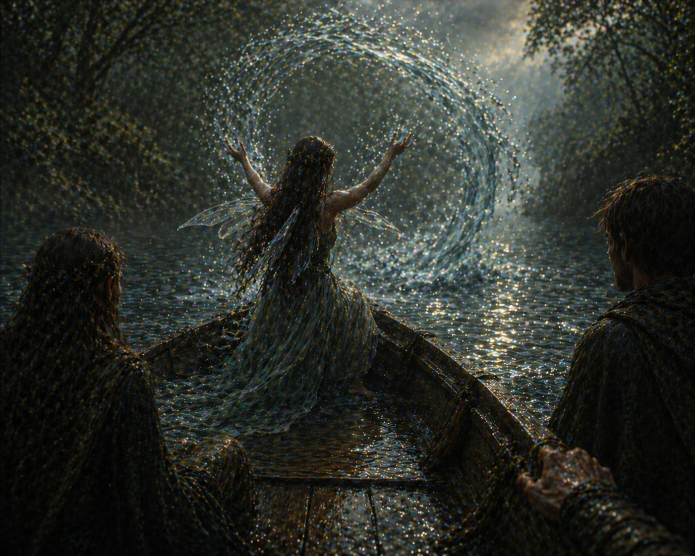

It took a while, but you and your friends got it done! As you row across the spring, you notice a new problem: the flow of the water is a bit too strong. Rocks and logs are blocking a smooth travel. Which fairy friend do you ask to help the situation?

